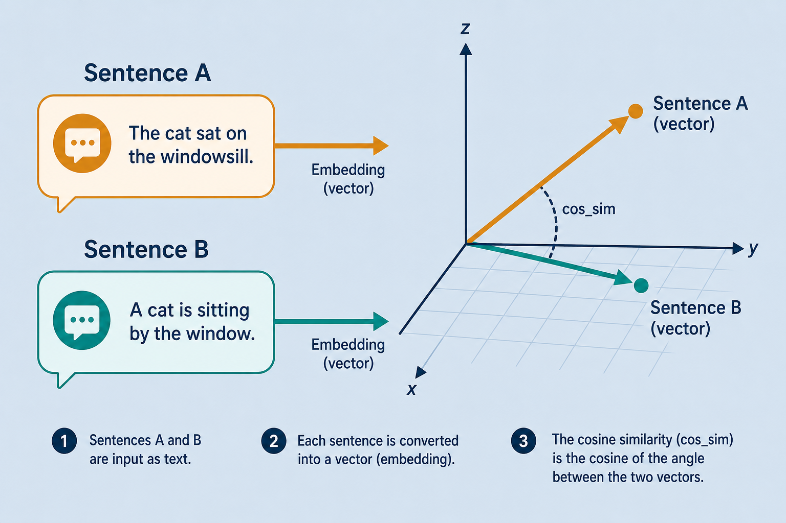

Concept · sentence-transformersteaching
sentence-transformers · sentence vectors
Turn a whole sentence into a high-quality vector in a few lines — similarity and light classification without heavy training.
sentence→encode()→vector→cos_sim / classify
01AI Lab
Whymatters
Good embeddings, light stack
fast
Minutes not weeks
Pretrained MiniLM / mpnet ready via encode().
enough
Often enough
Vectors + logistic / k-NN beats fine-tuning a giant model.
rag
Feeds RAG
Same vectors go into a vector DB for retrieve.
02notes/sentence-transformers.md
SBERTideas
Key ideas
one
One vector / sentence
Optimized for sentence-level meaning, not per-token.
sim
Similarity
cos_sim finds paraphrases and near neighbors.
pick
Pick a model
MiniLM = fast; mpnet = more accurate.
Keywords: sbert · embedding · similarity · Read: notes/sentence-transformers.md
03notes/sentence-transformers.md
Illustrationsentence-embed.png
Illustration

04AI Lab · illustration
Illustrationcosine-similarity.jpg
Illustration

05AI Lab · illustration
Illustrationembeddings-function.jpg
Illustration

06AI Lab · illustration
Codequick use
encode → cos_sim
from sentence_transformers import SentenceTransformer, util
model = SentenceTransformer("all-MiniLM-L6-v2")
emb = model.encode(["Hello", "Hi there"])
sim = util.cos_sim(emb[0], emb[1])
07notes/sentence-transformers.md
Usesdownstream
What to do with the vectors
cls
Light classifier
Logistic / k-NN on top of embeddings.
search
Semantic search
Rank documents by meaning.
vdb
Vector DB
Index once; top-k forever.
08related
Pipelinepipeline
Shortest path from text to meaning math
sentence→encode→vector→cos_sim | classify | DB
09notes/sentence-transformers.md
Nextcontinue
encode()
and ship.
notes/sentence-transformers.md → semantic-search / vector-database.
Open note →endAI Lab